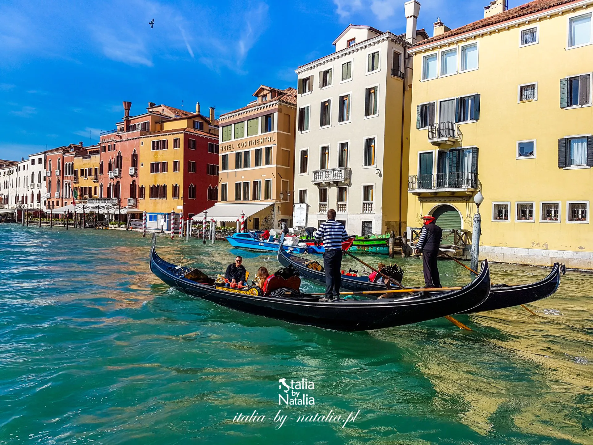
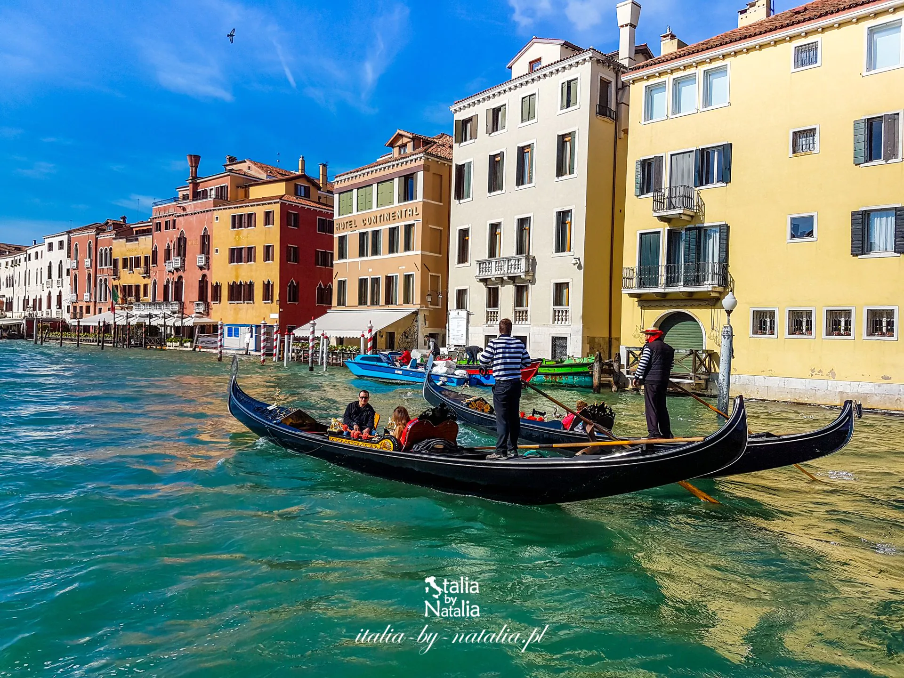
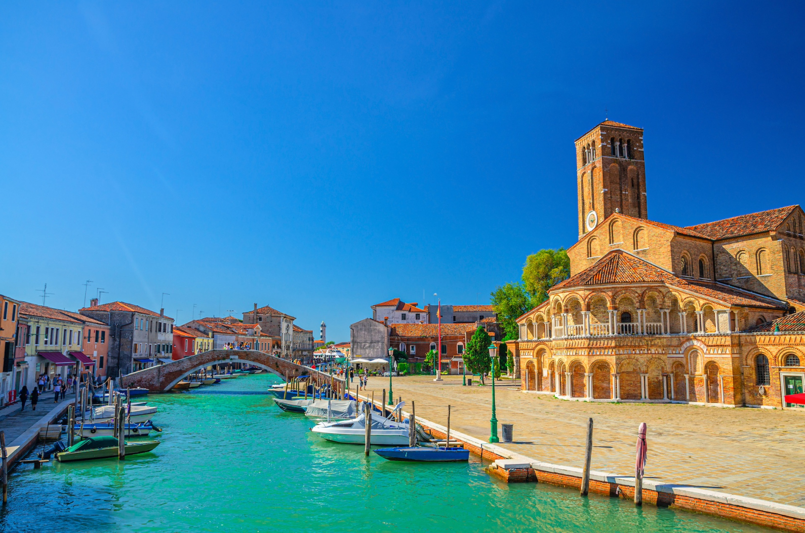
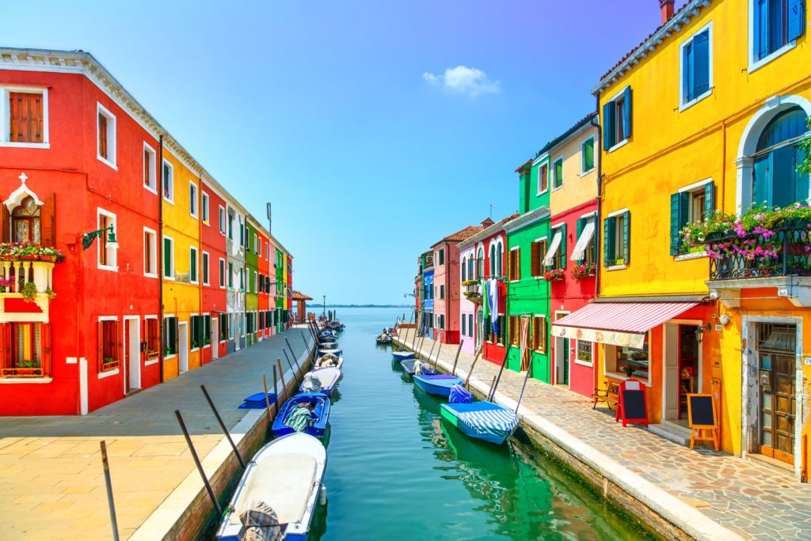
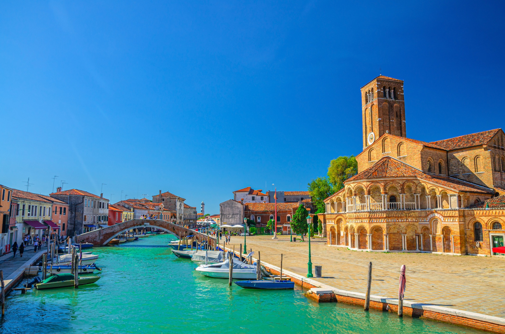
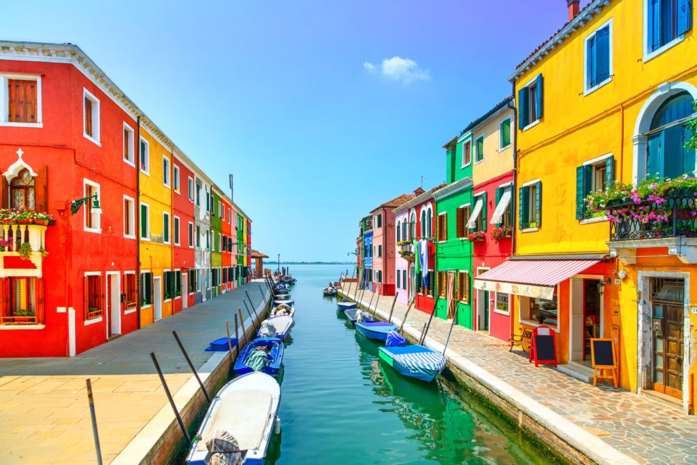
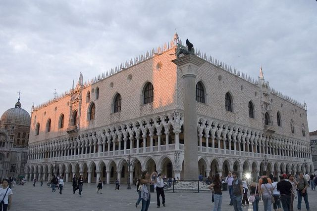
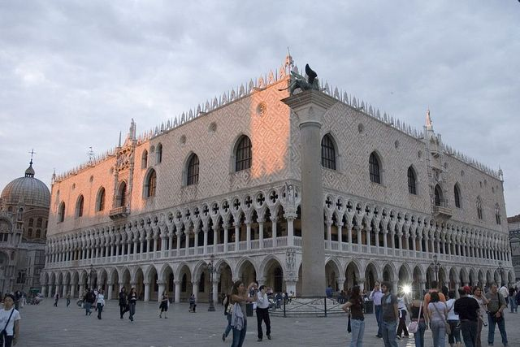

Historia Wenecji
Wenecja została założona w V wieku naszej ery przez uchodźców uciekających przed najazdami barbarzyńców. Położona na ponad stu małych wyspach, stała się niezwykle trudna do zdobycia i szybko przekształciła się w potężne miasto handlowe. Przez wieki była jednym z najważniejszych ośrodków handlu między Europą a Wschodem.
W czasach swojej świetności Republika Wenecka kontrolowała dużą część Morza Śródziemnego. Wenecja słynęła z bogactwa, sztuki i potęgi swojej floty. To właśnie stąd pochodzą słynni podróżnicy, jak Marco Polo, którzy rozsławili miasto na całym świecie.
Dziś Wenecja jest symbolem romantyzmu i unikalnej architektury. Jej sieć kanałów, mostów i wąskich uliczek zachwyca miliony turystów rocznie. Miasto jest wpisane na listę światowego dziedzictwa UNESCO i mimo problemów z zalewaniem, pozostaje jednym z najpiękniejszych miejsc na świecie.
 

 




 
